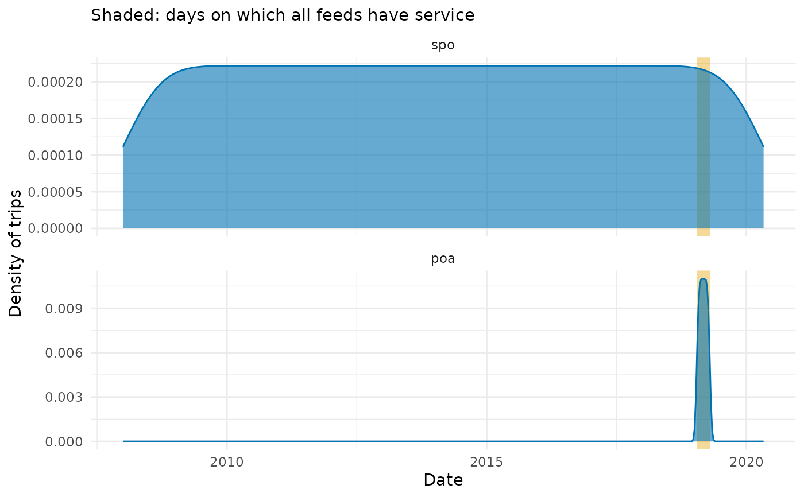

Returns the periods in which all the given GTFS feeds have service, or the number of trips each feed runs on each of its service days. Either result can also be plotted. Useful to pick a date on which several feeds can be analysed together (e.g. when routing on the networks of different agencies).
Arguments
- gtfs
Either a character vector with the paths to GTFS
.zipfiles or a list of GTFS objects, as created byread_gtfs()(a single GTFS object must be wrapped in a list).- resolution
A string.
"daily"(the default) returns the number of trips of each feed on each of its service days, and"periods"the periods in which all feeds have service.- plot
A logical. Whether to return a plot of the result instead of the result itself (requires the
{ggplot2}package). Defaults toFALSE.
Value
If plot = FALSE and resolution = "periods", a data.table with
one row per period of consecutive days on which all feeds have service,
and the columns start_date, end_date (both included in the period) and
n_days. It has no rows if there is no such day.
If plot = FALSE and resolution = "daily", a data.table with one row
per feed and service day, and the columns feed, date, n_trips (the
number of trips that run on the day) and overlap (whether all feeds have
service on the day).
If plot = TRUE, a ggplot object. With resolution = "periods", it
shows one bar per feed (top to bottom in the given order) spanning its
service days. With resolution = "daily", it shows the density of each
feed's trips over time (weighted by the number of trips per day), one
panel per feed. In both, the overlap periods are shaded.
Details
A feed has service on a day if at least one of its services runs on it. A
service runs on the days between the start_date and end_date of its
calendar entry whose weekday is flagged, minus the days removed from it
in calendar_dates (exception_type 2), plus the days added to it
(exception_type 1). If a service is both added and removed on a day, the
addition wins. Either table may be missing. If the feed has a trips
table with a service_id field, services not used by any trip are ignored.
feed_info dates are not used. A warning is raised for feeds without any
service day.
The number of trips on a day is the number of trips of the services that
run on it. A trip listed in frequencies counts once per departure, every
headway_secs from start_time until (but not including) end_time (an
entry whose start_time and end_time are equal departs once), and
the departures of overlapping entries of the same trip are added up
(identical entries count once), unlike in frequencies_to_stop_times(),
which keeps only their unique departures. A trip with an invalid
frequencies entry counts once, with a warning. Trips count on their
service day, so departures after midnight (with times later than
"24:00:00") count on the previous day. If the feed
has no trips table with a service_id field, n_trips is NA, and the
daily plot shows the density of its service days instead.
Feeds are named after their file names (without the extension) or after the
list names. Unnamed feeds are named after their position ("feed_1",
"feed_2", etc.), and duplicated names are made unique. Plots of feeds
spanning long periods can be zoomed in with ggplot2::coord_cartesian().
Examples
spo_path <- system.file("extdata/spo_gtfs.zip", package = "gtfstools")
poa_path <- system.file("extdata/poa_gtfs.zip", package = "gtfstools")
# feeds may be given as paths to their .zip files
daily_trips <- get_calendar_overlap(c(spo_path, poa_path))
head(daily_trips)
#> feed date n_trips overlap
#> <char> <Date> <int> <lgcl>
#> 1: spo_gtfs 2008-01-01 7948 FALSE
#> 2: spo_gtfs 2008-01-02 7948 FALSE
#> 3: spo_gtfs 2008-01-03 7948 FALSE
#> 4: spo_gtfs 2008-01-04 7948 FALSE
#> 5: spo_gtfs 2008-01-05 7945 FALSE
#> 6: spo_gtfs 2008-01-06 7945 FALSE
# or as a list of GTFS objects, whose names are used as feed names
feeds <- list(spo = read_gtfs(spo_path), poa = read_gtfs(poa_path))
get_calendar_overlap(feeds, resolution = "periods")
#> start_date end_date n_days
#> <Date> <Date> <int>
#> 1: 2019-01-18 2019-04-18 91
if (requireNamespace("ggplot2", quietly = TRUE)) {
get_calendar_overlap(feeds, plot = TRUE)
}
